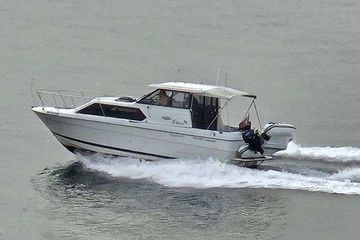

B-Atlas Boat Guide · BAYL-2859
Bayliner 2859 Ciera Express Hardtop Cruiser
1993–2002
The Bayliner 2859 Ciera Express is a hardtop cruiser originally sold as the 2859 Super Classic and later renamed Ciera Express. A single sterndrive, enclosed helm, mid-cabin berth and practical galley/head arrangement make it a weather-protected family cruiser with more cabin utility than open express designs of similar size.

- Length
- 27.75 ft
- Beam
- 9.75 ft
- Draft
- 3 ft
- Hull behaviour
- Planing
- Fuel
- Gasoline
- Propulsion
- Sterndrive
- Engine configuration
- Single Inboard
- Boat family
- Cruiser
- Construction
- Fiberglass
Best for
- Couples or small families cruising in cool or wet climates
- Buyers wanting a hardtop without a flybridge
- Mixed cruising and light fishing
Trade-offs
- Modest fuel capacity for extended high-speed travel
- Small cockpit relative to overall accommodation
- Sterndrive maintenance remains a major ownership item
- Sleeping capacity exceeds comfortable long-duration living space
Known concerns
- No model-specific concern has been promoted to B-Atlas’s evidence threshold. This does not mean the model has no age-, condition- or hull-specific risks.
Inspection focus
- Sterndrive and transom assembly
- Hardtop and window leaks
- Fuel and cooling systems
- Deck moisture and cockpit drainage
Continue researching
Related boat models
Bayliner 2855 Ciera Sunbridge Multi-Generation Sunbridge
28.08 ft · Planing
Bayliner 3058 Command Bridge Command Bridge Cruiser
31 ft · Planing
Bayliner 3055 Ciera Sunbridge / 305 SB Express Cruiser
31.5 ft · Planing
Bayliner 2452 Ciera Express Hardtop Cruiser
23.42 ft · Planing
Bayliner 3218 Motoryacht Flybridge Motor Yacht
32.67 ft · Semi-Displacement
Bayliner 3258 Command Bridge Command Bridge Cruiser
32.92 ft · Planing
About this record
B-Atlas preserves uncertainty: missing information remains unknown rather than being treated as a negative. Specifications and guidance describe the model record; individual boats can differ by year, equipment, refit and condition.